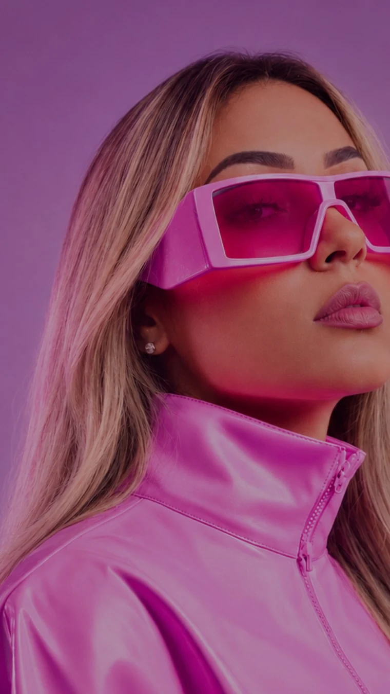

Ingrid Cristina · Master Educadora LED Lash Pro
Seu talento.
Seu negócio.
Sua próxima versão.
Técnica que evolui. Visão de empresária que acompanha. Conheça o Método Lash Empresária e dê direção ao seu próximo passo.
- Formação LED
- Goiânia, GO

- +5.000 alunasUma comunidade em evolução
- LED Lash ProTécnica com direção
- Visão de empresáriaPosicionamento e estratégia
- 01 · EvoluirUm novo olhar para a técnicaConheça a proposta da formação Lash Empresária LED e entenda como ela se encaixa na sua rotina.
- 02 · ComunicarSeu valor precisa aparecerPosicionamento, presença digital e clareza para apresentar o seu trabalho.
- 03 · EmpreenderPense como empresáriaExperiência da cliente e estratégia comercial fazem parte do seu desenvolvimento.
02 / Mais perto da prática
A formação
ganha vida aqui.
Ambiente de aprendizagem e atenção aos detalhes. Explore os registros e amplie as fotos para ver cada momento.
01 / NA PRÁTICAEm salaO conhecimento encontra o ambiente de formação. 02 / NA PRÁTICAAtenção ao detalheUm registro da prática de extensão de cílios.
1 / 2Deslize para explorar
Registros de bastidores e aplicação. Conheça mais do dia a dia no Instagram da Ingrid.
03 / Quem está à frente
Ingrid Cristina.
Lash com visão
de empresária.
Master Educadora LED Lash Pro e à frente do Método Lash Empresária, Ingrid conecta a formação em cílios a uma visão mais ampla da carreira na beleza.
- Conhecimento que se desenvolveUm próximo passo para a sua atuação como lash designer.
- Uma marca com direçãoSeu trabalho, seu posicionamento e a experiência que você oferece.
- Encontro em GoiâniaConverse com a equipe sobre a formação presencial e as próximas turmas.
- 01Técnica.
- 02Posicionamento.
- 03Visão de negócio.
04 / Seu próximo passo
Vamos conversar
sobre o seu momento?
Conte o que você procura e leve a conversa para a equipe da Ingrid. Consulte formato, conteúdo, investimento e disponibilidade da próxima turma.
Antes de dar o próximo passo
Sua dúvida
pode estar aqui.
A formação é para iniciantes?
Converse com a equipe sobre a experiência necessária e o nível da próxima turma. Assim, você entende se a proposta combina com seu momento.
É sobre técnica ou sobre negócio?
A proposta Lash Empresária une a formação LED a temas de posicionamento, experiência da cliente e estratégia comercial.
Onde acontece a formação?
A formação presencial divulgada pela Ingrid acontece em Goiânia. Consulte a equipe para confirmar endereço, datas e formato da próxima turma.
O aparelho LED está incluído?
Há campanhas da Lash Empresária LED que incluem o aparelho. Confirme com a equipe o que está incluído na oferta e na turma que você deseja.
O formulário já faz minha inscrição?
Ele prepara uma mensagem para você enviar no Instagram. A inscrição, os valores e a disponibilidade são combinados diretamente com a equipe.